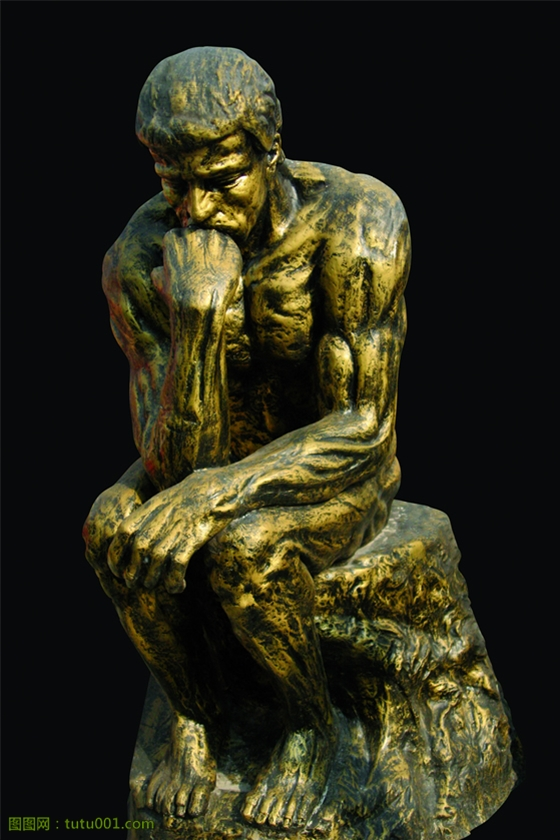

继上一篇《 学习一年总结（一）润物细无声》
3，导师制
世界上没有无缘无故的爱也没有无缘无故的恨！在这片特殊的土地上我对于为人有着自己的理解！
从来没有想过自己会成为一名老师！也没有想过和自己差不多大的师姐回事自己的老师！导师制，改变了我对老师的看法！导师！重在一个“导”上！进入一篇森林前的地图是导师要提供的！具体沿途的风光无限，就有学生自己去摸索和探险！
这个暑假我也带了一个学生！想想集觉得压力很大！你的学生什么样子？什么心态？能够有多少知识？能在提高班留到什么时候？这些都是和导师自己息息相关的！平时的言行，谈话的内容和态度决定着另外一个人的命运！我们不得不慎重！
这就是责任！一个人压在肩上的责任，我们不能草草了事！我们不能放任不管！我们必须为自己的所有负责！而学弟的信任和认真让我感到一种信任和温暖在两个人之间穿针引线，联系到了一起！
学会负责和担当是我最大的收获！
4，思想品行
老师常说一句话“学习师哥过程，经过了就成功”！在生活中这样的例子比比皆是！过程就意味着我们要经历从无到有的一系列心情，有苦闷，有快乐，有欲望，有烦躁！经过了这些，我们不一定要到达终点！走过80%的路我们就能自豪地告诉自己“我们成功了”！

思想品行是一个人立足社会的根本！对思想品行的提高有时间很不寻常的事情！在这里我能感觉到我的变化！对待人和事的态度决定你能走多远爬多高！
把人生看成一个过程！轻松走过，云淡风轻！
遗憾：
1， 对自己宽容
这是老生常谈！说白了还是执行力的问题！首先是对待英语没有坚持不懈！中间有过放弃的消极怠工！没有经常告诫自己：成为精英就要像精英一样活着！对自己现在的宽容就是对自己未来的放纵！
改正是必须的！时间管理的能力提升势在必行！行办法让自己既轻松快乐又高效能干！思考ing
2， 总结整理的不及时
米老师让我们学习完一个阶段后颗粒归仓！总结的东西，使我们忘不掉的一个重要一环！以后一定要及时有效地进行总结！
最后总结：我们在成长，雨露与雷电通行！我们在改变，200颗心同在！我们在盼望，父母，老师，兄弟姐妹的欢笑收场！再见过去的一年！在未来中，这一段时光，弥足珍贵！